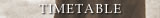
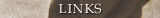

|
Ecole de BUDO RAJI - Rennes, Aikido, Jodo, Iaido, is an international BUDO school. The school was founded in 2001, in Rennes, France by Jaff Raji. Jaff has been a full time teacher of Aikido, Iaido, and Jodo for over two decades now. In the name of the school the acronym R-A-J-I originally stood for Rennes, Aikido, Jodo, Iaido, RENNES being Jaff's home base and the founding city of Ecole de BUDO RAJI, however with the school's international spread it can as well stand for Ryu, Aikido, Jodo, Iaido, RYU being the Japanese word for 'traditional school'. The Founder and Head Instructor, Jaff Raji and all the main teachers and students of the school are dedicated to practising and passing on the authentic and traditional values of Japanese BUDO especially as it relates to self development. The school considers BUDO and more specifically AIKIDO, Shinto Muso Ryu JODO, and Muso Shinden Ryu IAIDO as tools for the harmonious development of man. Even before the foundation of the Ecole de BUDO RAJI Jaff had been regularly teaching in numerous countries outside France, establishing and strengthening groups of serious practitioners of BUDO. Jaff's longstanding intimate work-relationship with his many students finally created the atmosphere and need for the foundation of Ecole de BUDO RAJI - International. This took place in 2003 in Portland, Oregon, USA during an intensive seminar with old students from France, Venezuela, Hungary, Equator, and the United States. Today Ecole de BUDO RAJI has dojos in France, Hungary, the USA, Venezuela, Equator, Chile, Romania, Reunion Island, Italy and Morocco. Jaff has also been teaching seminars in, Austria, Slovakia, Spain, Ireland, Taiwan and Chine. Since August of 2005 the headquarters of Ecole de BUDO RAJI has been located in Portland, Oregon. Teachers and students of the school frequently meet to share their work at major seminars held at different locations around the globe several times a year. The main discipline of the school is AIKIDO. Aikido is a complete BUDO in itself; as a matter of fact many consider it one of the highest possible levels of martial art. What is undoubtedly true, though, is that Aikido is a perfect means for acquiring self-knowledge, self-discipline, and possibly a higher level of freedom in one's life. Ecole de BUDO RAJI has a unique approach to Aikido practice, which is characterized by a strong emphasis on attention, as well as simplicity and precision of movements. The main focus is on basic concepts of BUDO and self-development, which are encapsulated in the basic techniques of the art (KIHON GI). In the school observation and understanding of the evolution and relationships of natural movements are more important than accumulating a vast knowledge of independent applications. In this way the approach is a vertical one rather than horizontal. If properly done Aikido practice enables one to work on oneself - on one's body, emotions, and intellect simultaneously -, and through increasing self-knowledge it helps to create inner unity and balance. Since Aikido can only be practised in a group (DOJO) and mostly through partner exercises, it allows for a deeper understanding of human relationships, as well. The complementary or secondary disciplines of the school are SHINTO MUSO RYU JODO, and MUSO SHINDEN RYU IAIDO. Note that secondary doesn't mean that they are taken less seriously. It only means that since in Ecole de BUDO RAJI most of the time is dedicated to Aikido it is physically impossible and maybe also unnecessary to spend the same amount of time on these disciplines for people who seriously and properly do Aikido. This is especially so if we understand that they are tools to reach the same goal: self-knowledge and self-development. On the other hand these older, classical schools provide a deeper understanding of BUDO and may fill in certain gaps that may characterize Aikido today. In this way they are complementary and useful for the serious advanced practitioner. Of course these disciplines should not be obligatory for everyone, on the other hand they can also be chosen by individuals not interested in Aikido as their only activity in the school. |
|  |
|  |
Tenjinchi Dojo | EBR International |Raji Ukemi Fitness| Aikido | Jodo | Iaido | Children's Group | Timetable | Instructors |